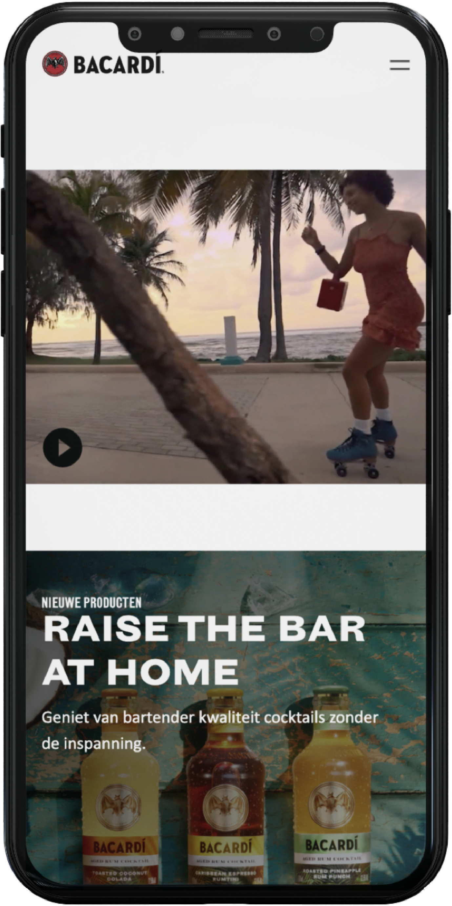

Check out the project for yourself!
vivanne.github.io/BLOK1WEB/
hidden
General information
05/10/2023
Subject: Frontend Development
Grade: 7,5
Used programme: Vs Code
Challenge
Bacardi's website may look impressive at first glance, but it falls short in terms of accessibility. Users relying on screen readers are likely to encounter numerous issues that could be easily resolved. Structural improvements are crucial in addressing these concerns. The challenge was to enhance the accessibility of the Bacardi website while maintaining its visual appeal, unless a superior alternative could be demonstrated. Throughout this project, I made significant strides in my journey as a frontend developer.
hidden
hidden
Added Features
-
Semantically correct HTML
An H1 element was added to the pages and almost to no div elements were used in the code. Only the needed div elements used for styling were an exception.
-
Screenreader friendly code
Images are placed above the subtitles for example. I also added a skip to main content button inside the header. This way users can go through the content faster without having to go through the whole menu or a description of the pictures before getting to the info itself.
-
Pause buttons on the videos
Now people that are easily triggered by constant motions can enjoy the website again by being able to put the video on pause if they want to.
-
Prefered Dark/Light mode
When the user prefers dark mode in his computer the websites changes automatically with that setting. The same goes for lightmode.